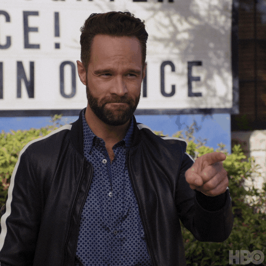
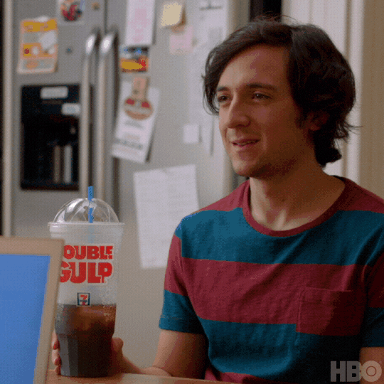
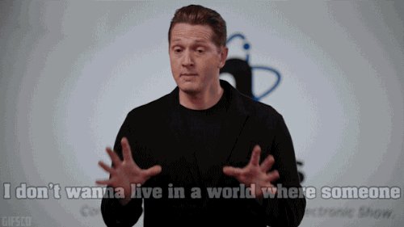
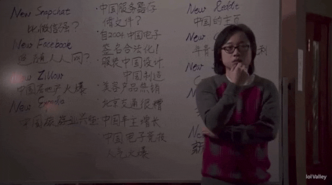

"And who's better example for this more than Russ Hanneman..seriously this man don't know nothing about tech above that he kind of stupid ..Can you imagine that he spent millions of dollars to put Radio online!!! .. I mean who might want that !!??..All what he care about is cash and his fancy cars . So the ironic facts here that you don't need to be a genius to make billions out of tech you just have to be lucky, So you gotta hang in there untill that moment when a wealthy VC calls your mobile saing I admired your idea would you accept 40 millions as a series A 🙂"
"In the show a brilliant coder with an algorithm worths billions like Richard gets into alot of troubles trying to make profit of his invention and sadly ends up gaining zero dollars while on the other hand A LOSER like Bighead is used by other billionairs to blackmail Richard and Bighead ends up not just with millins of dollars but with lots of respcted-tech magazine recognition which enabels him to be a brofessor in Stanford later...would you accept being a lucky loser like Bighead?"
"Gavin Belson is supposed to be a tech-pioneer in the show and he keeps saying "we just want to make the world a better place" but that's a lie , Gavin is kinda hypocrite. You can see him in this gif saying that he doesn't give a mind to the people or the world he claims that he seeking to be a better place . What only matters Gavin is that people keep talking about how great he is and how he changes the bla bla bla . SO as you can see the valley is full of people like Gavin..DO NOT BE ONE OF THEM"
"Jian- Yang is a Chinese normal coder who somehow made his way to the valley .That dishonest little man takes advantage of being in the same house with Richard and stole his algorithms and its abllication and runs back to his country to build a fake version of Pied PiperRichard's own company.That Jian-Yang represnts alot of bad people in the tech industry who wait until the right moment and then rob you! ..... SO BE CAREFULL!"